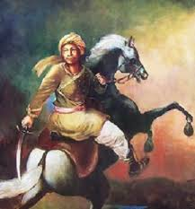

Assam's history is a rich tapestry of cultural confluence, tribal dynasties, ancient civilizations, and colonial influences. Located in the northeastern part of India, Assam has seen the rise and fall of various kingdoms, the spread of religious and cultural practices, and significant contributions to India’s independence struggle. Its strategic location and fertile land made it a hub of commerce, culture, and political power for centuries.
1. Ancient Assam (Prehistoric to Early Civilizations):
- The earliest human settlements in Assam date back to the Stone Age, as evidenced by archaeological finds of stone tools and pottery. By the Iron Age, the region was already flourishing with agriculture and trade.
- The history of Assam during the early centuries BCE is documented in ancient texts like the Mahabharata, which refers to the region as Pragjyotisha, ruled by the legendary king Narakasura. His son, Bhagadatta, fought in the Kurukshetra War. This kingdom of Pragjyotishpura, believed to be the ancient capital of Assam, later became Kamarupa.
- Kamarupa Kingdom: The Kamarupa Kingdom, established around the 4th century CE, became one of the most significant dynasties in ancient Assam. The Varmana, Salastambha, and Pala dynasties ruled Kamarupa, with rulers like Bhaskaravarman (7th century CE), a contemporary of Harshavardhana, expanding the kingdom and establishing diplomatic ties with distant regions, including China.
- Assam's history is closely associated with the spread of Hinduism and Tantrism during this time. The famous temple of Kamakhya in Guwahati, a revered Shakti Peeth, became an important center of Tantra worship.
2. Medieval Assam and the Ahom Dynasty (1228–1826):
- One of the most significant periods in Assam's history began with the arrival of the Ahoms in 1228. The Ahoms, originally from the Shan state of Myanmar (Burma), migrated to the Brahmaputra Valley under the leadership of Sukaphaa, the founder of the Ahom Kingdom. They established their rule in Upper Assam and gradually expanded their territory over the next six centuries.
- The Ahoms successfully resisted several invasions by the Mughals, particularly the famous Battle of Saraighat (1671), in which the Assamese forces, led by the brilliant military strategist Lachit Borphukan, decisively defeated the Mughal army. The Ahoms also consolidated the socio-political structure of Assam, introduced land reforms, and maintained administrative efficiency.
- The Ahoms successfully resisted several invasions by the Mughals, particularly the famous Battle of Saraighat (1671), in which the Assamese forces, led by the brilliant military strategist Lachit Borphukan, decisively defeated the Mughal army. The Ahoms also consolidated the socio-political structure of Assam, introduced land reforms, and maintained administrative efficiency.

3. Colonial Period and British Rule (1826–1947):
- In 1826, after years of Burmese invasions and the weakening of the Ahom Kingdom, the Treaty of Yandabo was signed, marking the end of Burmese control and the beginning of British dominance over Assam. The British annexed Assam as part of the Bengal Presidency and later made it a separate province in 1874.
- During British rule, Assam became a major center for tea cultivation. The British discovered the tea plant Camellia sinensis growing wild in Assam, leading to the development of the world-famous Assam Tea industry. Plantations, railroads, and communication networks expanded during this time, transforming Assam’s economy but also introducing exploitative labor practices, especially involving the recruitment of labor from central India to work in the tea gardens.
- Assam also saw the rise of nationalist movements during British rule. The people of Assam actively participated in the Indian independence movement, with leaders like Gopinath Bordoloi playing a crucial role in mobilizing the masses against British colonialism. Bordoloi, who later became the first Chief Minister of Assam post-independence, ensured Assam's interests were protected during the partition of India.
4. Post-Independence Assam (1947–Present):
- After India gained independence in 1947, Assam became part of the Indian Union. However, the state underwent significant changes during the post-independence period, with the formation of new states such as Nagaland**, Meghalaya, Mizoram, and Arunachal Pradesh, which were carved out of Assam, reducing its territorial size.
- In the late 20th century, Assam faced political instability due to ethnic tensions and demands for greater autonomy by various tribal groups. The Assam Movement (1979–1985), led by the All Assam Students' Union (AASU), sought to address issues related to illegal immigration from Bangladesh and called for safeguarding the rights of indigenous Assamese people. This movement culminated in the Assam Accord (1985), which sought to resolve these issues peacefully.
- Assam has also faced insurgency problems, with separatist groups like ULFA (United Liberation Front of Asom) demanding sovereignty. However, efforts by the government and civil society have helped restore peace in many parts of the state.
Conclusion:
The history of Assam is marked by resilience, cultural diversity, and a strong sense of identity. From the ancient Kamarupa Kingdom to the Ahom dynasty's golden era, and from colonial exploitation to post-independence struggles for identity and autonomy, Assam's past is a complex and fascinating journey that has shaped its modern-day cultural, political, and social fabric. Today, Assam continues to evolve, balancing its rich historical legacy with contemporary challenges and opportunities.